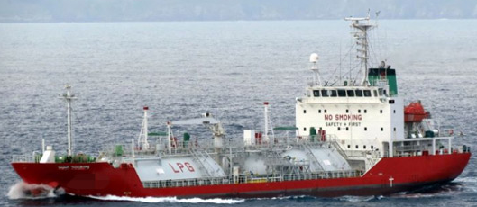

4,771 DWT 4,306 GRT LPG Carrier Blt 2006 Jp
/ informed by BNC SHIPBROKING CO., LTD.
(18-627)

- TYPE : LPG CARRIER (PRESSURIZED)
- BUILT : SEPT. 25, 2006, SANUKI SHIPBUILDING & IRON WORKS CO LTD., JAPAN
- FLAG/CLASS : MARSHALL ISLANDS / LR
- LOA/LBP/B/D : 99.90 / 93.50 / 17.00 / 8.20 M
- DWT/draft : 4,771 T / 6.3 M
- GRT/NRT : 4,306 / 1,374 T
- LIGHT WEIGHT TONNAGE: 2,804 T
- MAIN ENGINE : MAN-B&W 2,762 KW X 198 RPM X 1set
- AUX ENGINE : DAIHATSU 6DL-16A, 360 KW X 1,200 RPM X 1set
- FO TYPE : IFO380CST
- CARGO TANK CAPA. : ABT 5,000 m³
- OTHER TANK CAPA. : FO 587, DO 151, FW 205 m³
- LAST/NEXT SS : SEPT. 25, 2016 / SEPT. 2021
- NEXT DD : OCT. 2019
- LOCATION : TRADING MIDDLE EAST ASIA – S. E. ASIA RANGE
Information History
- 180813 : She is available for sale.